산림기사 (2004-08-08 기출문제)
1과목: 조림학
1. 발아세(發芽勢)를 구하는 공식은?
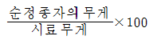
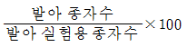
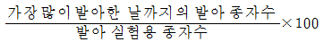
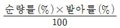
(정답률: 42%)

2. 테트라졸륨 검사는 어떠한 목적으로 하는가?
- 바이러스 검출
- 발아 휴면 상태의 감별
- 종자활력 조사
- 대기오염의 영향 검사
(정답률: 89%)
3. 묘령(苗齡)이 2-1-2인 묘목의 이식 횟수는?
- 1 회
- 2 회
- 3 회
- 4 회
(정답률: 62%)
4. 수목의 생장과 광요인에 관한 내용이다. 틀리는 것은?
- 수목생장에 미치는 광요인은 광도, 광질, 일장으로 구분할 수 있다.
- 광도는 위도, 해발고, 방위, 경사, 계절, 시각, 구름량에 따라 다르다.
- 임내 광도는 수령, 수종, 밀도에 따라 다르다.
- 임내 광도는 절대조도로 표시하는 것이 일반적이다.
(정답률: 72%)
5. 다음 중 가장 높은 온도 조건에서 접목이 실시되는 것이 이로운 수종은?
- 잣나무
- 소나무
- 밤나무
- 호도나무
(정답률: 53%)
6. 그림과 같은 구성을 보이는 동령임분에서 빗금친 부분을 간벌하였다면 어떠한 간벌방식이 적용된 것인가?
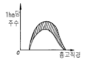
- 하층간벌
- 상층간벌
- 택벌식간벌
- 기계적간벌
(정답률: 62%)
7. 미생물의 활동이 대단히 왕성하고 양료의 이용률이 높으며 부식의 형성이 쉽게되는 임지의 pH는 대략 어느 정도인가?
- pH 3.4 이하
- pH 5.0 ~ 5.5
- pH 6.5 ~ 7.0
- pH 8.0 ~ 8.5
(정답률: 74%)
8. 한다발에 잎이 다섯개인 것은?
- 섬잣나무
- 리기다 소나무
- 소나무
- 방크스 소나무
(정답률: 69%)
9. 대경목을 매년 생산할 수 있는 작업종은?
- 개벌작업
- 택벌작업
- 산벌작업
- 중림작업
(정답률: 71%)
10. 어미나무(母樹)작업법으로 갱신할 때 어미나무(母樹)로 잔존시키는 양은 원래의 임목 재적의 몇 %로 하는가?
- 10 %
- 30 %
- 40 %
- 60 %
(정답률: 78%)
11. 다음 그림과 같은 임분 구조를 가진 것은?
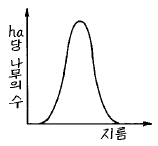
- 보안림
- 교림
- 동령림
- 국유림
(정답률: 78%)
12. 보잔목 작업을 실시하면 그 뒤에 나타나는 임분은 대체로 어떻게 되는가?
- 이단림
- 교림
- 혼효림
- 일제림
(정답률: 53%)
13. 다음 조건하에 묘포 파종상에서 산파(散播)의 경우 파종량을 구하는 올바른 식은 어느 것인가?
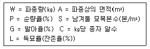
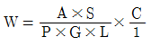
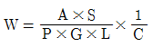
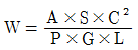
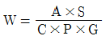
(정답률: 69%)
14. 다음의 수종 중에서 삼림기후대를 고려할 때 우리나라의 강원도 북부 산간 지역에 식재 권장 가능 수종은?
- 편백
- 삼나무
- 박달나무
- 가시나무
(정답률: 50%)
15. 가지치기 목적을 바르게 설명하고 있는 내용은?
- 무절재(無節材)를 생산하기 위해 실시한다.
- 수간의 초살도(梢殺度)를 높이기 위해 실시한다.
- 수간 하부의 직경 생장을 촉진시키기 위해서 실시 한다.
- 줄기의 편심생장을 유도하여 고급재를 생산할 목적으로 실시한다.
(정답률: 52%)
16. 다음 중에서 산벌작업을 바르게 설명하는 내용은?
- 왜림을 조성하기 위한 작업 방법이다.
- 인공 조림을 중심으로 갱신 작업을 진행한다.
- 예비벌-하종벌-후벌 순으로 작업이 진행된다.
- 기본적으로 양수만을 대상으로 이령림을 조성하고자 실시되는 작업이다.
(정답률: 84%)
17. 다음 수종 중 종자 숙기가 5월인 것은?
- 귀룽나무
- 자작나무
- 박달나무
- 사시나무
(정답률: 45%)
18. 간벌의 효과와 거리가 먼 것은?
- 벌기 수확이 양적, 질적으로 높아진다.
- 생산될 목재의 형질이 향상된다.
- 조기에 간벌 수확이 얻어진다.
- 수고생장을 촉진하여 연륜폭이 넓어진다.
(정답률: 55%)
19. 묘목 식재시 나타나는 밀도 법칙을 옳게 설명한 것은?
- 밀도가 높을수록 총생산량 중 가지가 차지하는 비율이 높아진다.
- 밀도는 직경생장보다 수고생장에 큰 영향을 주지만 단목(單木)의 재적(材積)생장은 같다.
- 밀도가 지나치게 높으면 단목의 생활력은 약해지나 임분의 안정성은 높아진다.
- 밀도가 높으면 지름은 가늘지만 완만재(完滿材)가 되고 소립(疎立)시키면 초살형(梢殺型)이 된다.
(정답률: 63%)
20. 시비의 반응곡선을 옳게 설명한 것은?
- 양분공급량과 식물생산량 사이의 관계를 나타낸 곡선
- 양분요구량과 식물생장량 사이의 관계를 나타낸 곡선
- 양분공급량과 식물생장량 사이의 관계를 나타낸 곡선
- 양분요구량과 식물생산량 사이의 관계를 나타낸 곡선
(정답률: 27%)
2과목: 산림보호학
21. 솔나방의 월동 형태는 어느 것인가?
- 알
- 2령 유충
- 5령 유충
- 성충
(정답률: 20%)
22. 아황산가스에 대한 식물체의 감수성에 관한 설명이다. 옳은 것은?
- 식물은 5℃ 이하에서 아황산가스에 대한 저항성이 낮아진다.
- 상대습도가 높아짐에 따라 SO2에 대한 감수성은 낮아진다.
- 암흑하에서는 SO2에 대한 저항성이 매우 크다.
- 영양분이 결핍된 곳에서 자란 식물의 감수성은 매우 낮다.
(정답률: 48%)
23. 다음 중에서 목질의 재질을 저하시키는 해충이 아닌 것은?
- 소나무좀
- 점박이 수염긴하늘소
- 복숭아명나방
- 소나무순나방
(정답률: 74%)
24. 솔나방의 월동 습성을 이용한 방제법은?
- 수관에 약제를 살포한다.
- 수간에 짚이나 가마니를 감아놓아 유인 포살한다.
- 유아등을 가설하여 유인 포살한다.
- 솜뭉치에 석유를 칠하여 유충을 포살한다.
(정답률: 55%)
25. 전염 후 발병되기까지의 잠복기간이 가장 긴 병은?
- 모잘록병
- 오동나무 탄저병
- 삼나무 적고병
- 잣나무 털녹병
(정답률: 39%)
26. 다음 중 주로 곤충이나 소동물에 의하여 전반되는 병은?
- 오동나무빗자루병
- 향나무붉은별무늬병
- 호도나무갈색부패병
- 뿌리혹병
(정답률: 47%)
27. 파이토(마이코)플라스마에 의한 병해를 방제하는데 사용하는 약제는?
- 스트렙토 마이신
- 엑티디이온 BR
- 가스가마이신
- 옥시테트라싸이클린
(정답률: 90%)
28. 녹병의 방제에 해당되지 않는 것은?
- 중간기주의 박멸
- 나크수화제의 살포
- 저항성 품종 육성
- 석회유황합제의 살포
(정답률: 65%)
29. 식물에 기생하는 대부분의 세균 형태는?
- 구형(coccus)
- 다형상(pleomorphic)
- 나선상(spirillum)
- 봉상(bacillus)
(정답률: 8%)
30. 풍해에 대한 기술 중 가장 옳은 것은?
- 수간 하부가 활엽수는 상방편심(上方偏心)을 하고 침엽수는 하방편심(下方偏心)을 한다.
- 주풍(主風)은 풍절(風折), 풍도(風倒), 열상(裂傷)등 산림에 큰 피해를 준다.
- 방풍림에 쓰이는 수종은 심근성이고 지조(枝條)가 밀생하며 성림(成林)이 빠른 것으로 한다.
- 우리나라에서는 서북풍은 온화하고 동남풍은 차고 강하며 육풍(陸風)은 해풍(海風)보다 강하다.
(정답률: 66%)
31. 소나무 혹병의 중간기주는?
- 참나무
- 송이풀
- 매발톱나무
- 향나무
(정답률: 60%)
32. 다음 중 종자에 붙어서 월동하는 균으로 대표적인 것은?
- 뿌리혹병(근두암종병균)
- 잣나무털녹병균
- 모잘록병균
- 낙엽송잎떨림병균
(정답률: 34%)
33. 그을음병을 방제하는데 가장 알맞는 방법은?
- 질소질 비료를 충분히 준다.
- 진딧물, 깍지벌레 등을 구제한다.
- 토양소독을 철저히 한다.
- 종자소독을 철저히 한다.
(정답률: 87%)
34. 곤충의 체벽 중에서 세포층으로 되어 있는 부분은?
- 진피층
- 외표피
- 원표피
- 기저막
(정답률: 64%)
35. 대기 중에서 화학반응에 의하여 새로운 독성을 지니게 되는 대기오염 물질은?
- 황산화물
- 불화수소가스
- 질소산화물
- PAN
(정답률: 44%)
36. 밤바구미의 피해를 받은 밤은 무엇으로 훈증하는가?
- 에틸알콜
- 황산
- 인화늄정제
- 탄산가스
(정답률: 32%)
37. 1년에 2회 발생하며, 1화기에는 자두, 복숭아등의 열매를 가해하고 2화기에는 밤나무의 열매를 주로 가해하는 해충은?
- 삼나무독나방
- 복숭아명나방
- 솔잎혹파리
- 넓적다리잎벌
(정답률: 80%)
38. 솔잎혹파리의 월동 유충의 밀도를 나타낼 때 쓰이는 표현 방법은?
- 면적 단위로 한다.
- 가지길이를 단위로 한다.
- 먹이의 양으로 한다.
- 유아등에 모인 수로 한다.
(정답률: 30%)
39. 삼림화재가 토양에 미치는 피해가 아닌 것은?
- 지표류하수(surface run-off)가 늘게 된다.
- 투수성(penetrability)이 증가된다.
- 지하의 저수능력이 감퇴된다.
- 물에 의한 침식이 격화된다.
(정답률: 68%)
40. 산림 해충 발생의 징후와 관계되는 현상은?
- 새순이 발생한다.
- 잎색이 변화한다.
- 하초(下草)가 무성해진다.
- 잎의 양(量)이 증가한다.
(정답률: 67%)
3과목: 임업경영학
41. m년 마다 R씩, 도합 n회 얻을 수 있는 이자의 후가합계(K) 공식은 다음 중 어느 것인가? (단 P:이율)
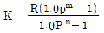
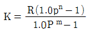
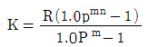
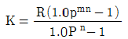
(정답률: 41%)
42. 다음 중 재적의 연년생장량(Current Annual Increment)곡선과 평균생장량(Mean Annual Increment)곡선의 관계가 바르게 설명한 것은?
- 평균생장량이 최대인 점에서 두 곡선은 만난다.
- 연년생장량이 최대인 점에서 두 곡선은 만난다.
- 두 곡선이 만나는 시점까지는 평균생장량이 연년생장량보다 항상 크다.
- 두 곡선이 만나는 시점을 벌기령으로 정하는 것을 산림순수익 최대의 벌기령이라 한다.
(정답률: 55%)
43. 다음 임지기망가에 대한 설명 중 맞지 않는 것은?
- 벌기가 짧을수록 커지나 어느 시기 최대에 도달한 후부터는 점차 감소한다.
- 조림비가 클수록 작아진다.
- 이율이 낮을수록 커진다.
- 간벌 수익이 클수록 커진다.
(정답률: 12%)
44. 다음 작업종 중 경관 및 생태계 보존에 가장 유리한 작업종은?
- 골라베기 작업
- 모두베기 작업
- 왜림작업
- 모수작업
(정답률: 66%)
45. 삼림이 가지고 있는 기능 중에서 제 1차 기능 혹은 직접 기능이 아닌 것은?
- 목재 생산기능
- 부산물 생산기능
- 산림의 휴양기능
- 산림의 경제기능
(정답률: 40%)
46. 어느 일정한 용도에 적합한 크기를 생산하는데 필요한 연령을 기준으로 하여 결정된 벌기령은 어느 것인가?
- 자연적 벌기령
- 공예적 벌기령
- 재적수확 최대의 벌기령
- 삼림순수익 최대의 벌기령
(정답률: 65%)
47. 주업적 임업경영의 필요조건과 가장 관계가 적은 것은?
- 산림의 집단화
- 농림 복합 경영 형태의 추진
- 매년 균등량의 보속생산
- 산림 관리 조직의 정비
(정답률: 31%)
48. 어느 임업경영자가 자기 소유의 산림에 대한 임지, 임목축적 설비등의 총재산(자산)을 파악한 결과 7,180만원이었고, 부채는 1,510만원이었다. 이경영자의 자기자본은?
- 7,180만원
- 1,510만원
- 8,690만원
- 5,670만원
(정답률: 44%)
49. 기업의 손익계산 방법으로 가장 옳은 것은?
- 기말 순재산액 - 기말 부채액
- 기말 순재산액 - 기초 부채액
- (기말 자산액 - 기말 부채액) - (기초 자산액 - 기초부채액)
- 기초 자산액 - 기초 부채액
(정답률: 55%)
50. 산림면적이 120 ha 윤벌기 40년 1영급이 10영계인 때의 법정 영급면적과 법정 영계면적은?
- 30 ha와 3 ha
- 30 ha와 10 ha
- 3 ha와 30 ha
- 10 ha와 30 ha
(정답률: 48%)
51. 삼림피해의 평정원칙이라 할 수 없는 것은?
- 피해에 대한 보상은 물질적인 원상복구가 아니라 금전으로 이루어 질 수 밖에 없다.
- 수입의 감손(loss of income)은 피해액 평정의 근거가 될 수 없다.
- 토양이나 임목과 같은 부동산의 피해액은 대체로 피해 전후의 가치를 비교함으로써 측정할 수 있다.
- 재해는 추상적인 것이 아니라 실제적이고 현실적이어야 한다.
(정답률: 36%)
52. 재적 연년 생장량과 총평균 생장량과의 관계 중 틀린 것은?
- 총평균 생장량이 상승하고 있는 동안에는 연년생장량이 크다.
- 총평균 생장량이 최대일 때는 연년생장량과 같다.
- 총평균 생장량이 하강할 때는 연년생장량이 크다.
- 총평균 생장량의 극대기는 연년생장량 극대기보다 늦다.
(정답률: 45%)
53. 임분밀도의 척도로 사용하지 않는 것은?
- 흉고단면적
- 단위면적당 임목본수
- 수관경쟁인자
- 토양의 등급
(정답률: 80%)
54. 원금 V를 투입하여 n년 간을 거치이식하면 그 기말에 얻은 n년 간의 복리와 원금과의 원리합계를 얻는다. 이것을 V의 n년 후의 후가라 할 때 맞는 식은?
- N = V ÷ 1.0 Pn
- N = V - 1.0 Pn
- N = V + V · 1.0 Pn
- N = V · 1.0 Pn
(정답률: 17%)
55. 어느 잣나무 임분의 영급별 임목본수는 다음과 같다. 즉,Ⅰ영급 10본, Ⅱ영급 30본, Ⅲ영급 50본, Ⅳ영급 70본, Ⅴ영급 40본이라고 할 때 본 수령은 얼마인가?
- 1.5영급
- 2.5영급
- 3.5영급
- 4.5영급
(정답률: 65%)
56. 수확조절 방법인 조사법은 주로 택벌림에 응용되어 왔다. 그 중점 내용은 무엇인가?
- 산벌, 벌채
- 하예, 시비
- 식재, 육종
- 조림, 무육
(정답률: 58%)
57. 보속작업을 할때 한 작업급에 속하는 모든 임분을 일순벌하는데 소요되는 기간을 무엇이라고 하는가?
- 벌기령
- 벌채령
- 윤벌령
- 윤벌기
(정답률: 48%)
58. 임업경영을 옳게 설명한 것은?
- 정해진 목적을 달성하기 위한 임업생산을 하는 조직과 활동
- 임업생산을 하기 위한 계획과 사무업무
- 임지를 대상으로 하여 노동과 자본재를 사용, 목재등을 생산하는 것
- 국가나 단체에서 임업생산을 하기 위한 경영수단
(정답률: 40%)
59. 다음 중 이령림의 연령 측정방법에 해당하지 않는 것은?
- 본수령
- 재적령
- 표본목령
- 벌기령
(정답률: 39%)
60. 소반(小班)구획의 기준으로 될 수 없는 것은?
- 임분(林分)
- 수종(樹種)
- 천연적인 구획계(區劃界)
- 토지이용 상황
(정답률: 28%)
4과목: 임도공학
61. 대표적인 다공정 처리기계로 벌도에서 가지치기, 조재목 마름질, 토막내기 작업을 한 공정에서 할 수 있는 장비는?
- 하베스터
- 펠러번처
- 그래플톱
- 쾨링펠러포워더
(정답률: 48%)
62. 지선 임도 밀도가 20 m/ha이고, 지선 임도 개설 단가가 1ha 당 2,000원, 1 ha 당 수확재적이 20m3 일 때 지선임도 가격은 1m3 당 얼마인가?
- 1,500원
- 2,000원
- 4,000원
- 20,000원
(정답률: 53%)
63. 다음 중 체인톱의 안전장치가 아닌 것은?
- 안내판(guide bar)
- 체인 잡이(chain catcher)
- 안전 스로틀레버(safety throttle)
- 핸드가드(hand guard)
(정답률: 66%)
64. 임도에서 차량 주행시 안전시거를 고려하지 않아도 되는 사항은?
- 횡단물매
- 평면선형
- 종단선형
- 배향곡선
(정답률: 30%)
65. 그림과 같이 경사진 산비탈에 서 있는 나무의 벌목 위치는 어느 곳이 적당한가?
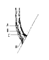
- A
- B
- C
- D
(정답률: 36%)
66. 다음 중 트랙터 집재기에 의한 집재방식의 장점이 아닌 것은 어느 것인가?
- 기동성이 크므로 어느 정도의 작업도로가 있으면 실행된다.
- 비교적 견인력이 크므로 한번에 다량의 목재를 반출할 수 있다.
- 운전이 비교적 용이하여 와이어로프를 설치하는 집재기 작업에 비해 사고 발생율이 적다.
- 고정비용이 적게 들므로 적은 작업량에도 실행하기 용이하다.
(정답률: 44%)
67. 임도의 설계시 곡선 설정법에 해당되지 않는 것은?
- 교각법
- 교차법
- 편각법
- 진출법
(정답률: 48%)
68. 나무가 넘어지는 속도를 감소시켜 주며, 작업의 안전과 관계가 있는 것은?
- 벌도맥
- 수구
- 바버체어
- 근주살
(정답률: 42%)
69. 벌도 방향과 안전작업을 위해 사용되는 기구는?
- 쐐기
- 반송기
- 도르래
- 피비
(정답률: 64%)
70. 다음 중 수액을 채취하는 주요 수종으로 바르지 못한 것은?
- 자작나무
- 거제수나무
- 고로쇠나무
- 황칠나무
(정답률: 46%)
71. 산림법에 따른 대피소의 설치기준에 의한 내용이다. 바르게 설명한 것은?
- 간선임도에 있어서 대피소의 간격은 200 m 이내, 나비 5 m 이상, 유효길이는 20 m 이상이다.
- 간선,지선임도 모두 대피소의 간격은 500 m 이내, 나비 5 m 이상, 유효길이는 15 m 이상이다.
- 지선임도에 있어서 대피소의 간격은 400 m 이내, 나비 5 m 이상, 유효길이는 15 m 이상이다.
- 간선,지선임도 모두 대피소의 간격은 300 m 이내, 나비 5 m 이상, 유효길이는 10 m 이상이다.
(정답률: 50%)
72. 느타리버섯 원목재배에 가장 적당한 수종은?
- 상수리나무
- 포플러
- 소나무
- 졸참나무
(정답률: 22%)
73. 표고균의 관리와 접종에 대한 설명 중 틀린 것은?
- 종균은 인수 즉시 접종하고 접종시까지 실온 15℃ 이하의 서늘한 곳에 보관한다.
- 접종시기는 봄철(살구꽃 필 때)에 하는 것이 좋다.
- 종균이 덩이로 되어 있을 경우엔 부드럽게 부스러뜨려서 접종하는 것이 좋다.
- 접종량이 많을수록 종균이 원목에 빨리 퍼진다.
(정답률: 44%)
74. 집재가선시의 와이로프의 지름이 가장 굵은 선은?
- 짐올림줄
- 순환줄
- 작업줄
- 가공본줄
(정답률: 29%)
75. 노망의 특성을 나타내는 지표가 아닌 것은?
- 임도밀도
- 개발지수
- 평균집재거리
- 임도선형
(정답률: 34%)
76. 벌목시 수구(밑베기)작업 후에 추구(뒷베기)작업 방법으로 가장 적당한 것은?
- 수구 바닥보다 원목직경의 1/5 이상 높은 부위에 줄기와 직각 방향으로 한다.
- 수구 바닥보다 원목직경의 1/5 이상 높은 부위에 줄기와 45° 방향으로 한다.
- 수구 바닥보다 원목직경의 1/10 이상 높은 부위에 줄기와 직각 방향으로 한다.
- 수구 바닥보다 원목직경의 1/10 이상 높은 부위에 줄기와 45° 방향으로 한다.
(정답률: 39%)
77. 플라스틱 수라 설치시의 최대 종단물매는 몇 % 정도가 적당한가?
- 30∼40 %
- 40∼50 %
- 50∼60 %
- 60∼70 %
(정답률: 18%)
78. 다음 운재 삭도의 종류 중 운재거리가 가장 긴 삭도 방식은 어느 것인가?
- 반가선식 삭도
- 꼬리줄부착교주식 삭도
- 복선순환식 삭도
- 반송줄부착교주식 삭도
(정답률: 57%)
79. 축조 비용과 토사 유출도 적지만 가선집재 방법과 같은 상향 집재시스템에 의하지 않고는 산림을 개발할 수 없는 임도는?
- 계곡임도
- 사면임도
- 능선임도
- 산정부개발형
(정답률: 39%)
80. 가선집재시 버팀줄은 지주목의 좌우 몇도 범위내에 설치 하여야 하는가?
- 10∼20°
- 20∼30°
- 40∼60°
- 60° 이상
(정답률: 40%)
5과목: 사방공학
81. 경관의 주요 구성요소가 아닌 것은?
- 형태(form)
- 선(line)
- 규모(scale)
- 질감(texture)
(정답률: 38%)
82. 현행 자연휴양림 운영 지침에 의해 자연 휴양림 입장료를 내지 않아도 되는 사람은?
- 학생
- 군인
- 장애인
- 경찰
(정답률: 62%)
83. 이용객이 일으키는 문제와 이에 대한 일반적인 관리 대응 방법으로 알맞지 않은 것은?
- 야영행위에 있어서의 오염과 소음을 야기시키는 부주 의한 행동에 대해서는 설득과 교육, 규칙의 적용으로 대응한다.
- 야생 동· 식물 절취 등의 불법적인 행동에 대해서는 설득과 교육, 규칙의 적용으로 대응한다.
- 정보부재에 의한 한 지역의 집중 이용에 대해서는 교육 및 정보를 제공한다.
- 조심스러운 이용에도 발생하는 훼손은 다른 지역으로 이용을 유도하거나 이용자 수를 제한한다.
(정답률: 67%)
84. 다음 중 이용객에 대한 직접적인 규제에 해당되는 것은?
- 한 지역내의 이용 시간 제한
- 입장료 혹은 사용료의 부과
- 이용객에게 생태적 지식을 교육
- 저이용 지역의 홍보
(정답률: 86%)
85. 휴양 자원의 관리 기본 가정 중 잘못된 설명은?
- 자원이 받는 영향은 다양하다
- 자원의 변화는 자연스런 현상이다.
- 영향은 빠르며, 회복은 느리다.
- 자원의 이용과 그 영향은 언제나 비례적이다.
(정답률: 37%)
86. 휴양활동이 환경에 미치는 영향에 대한 설명 중 틀린 것은?
- 변화는 환경의 불가피한 특성이다
- 영향은 휴양이용의 필연적인 결과이다
- 영향은 환경의 내성에 따라 거의 유사하다
- 환경의 영향은 비교적 예측 가능한 시· 공간적 패턴을 가지고 있다.
(정답률: 13%)
87. 다음 중 자연휴양림내 편익시설은?
- 물놀이터
- 취사장
- 야외교실
- 산림욕장
(정답률: 50%)
88. 휴양지 시설의 설계시 고려사항 중 중요도가 가장 낮은 것은?
- 환경과의 조화성
- 시공의 용이성
- 관리의 용이성
- 기능의 우수성
(정답률: 58%)
89. 산림휴양자원의 정의를 포괄적으로 대변하는 것은?
- 산림법에 명시된 자연 휴양림을 말한다.
- 국립공원 등 자연공원을 말한다.
- 시민의 휴식처인 도시림을 말한다.
- 이용자 욕구를 만족시킬 휴양기회를 제공하는 자연적, 인공적 산림 환경요소를 말한다.
(정답률: 77%)
90. 환경해설의 목적에 어긋나는 것은?
- 교육적 측면
- 홍보적 측면
- 경제적 측면
- 관리적 측면
(정답률: 59%)
91. 휴양림 마케팅 전략에서 판매촉진 방법 중 가장 효과가 느린 것은?
- 신문 등에 기사화
- 광고
- 개인적인 접촉
- 특별판매 촉진
(정답률: 62%)
92. 서비스 평가의 방법은 상황과 대상에 따라 그리고 적용 방법의 다양함에 의해 달라진다. 다음 중 프로그램 또는 서비스가 휴양객이나 참여자에게 어떠한 영향을 어떻게 얼마나 주는가를 가리는 평가 방법은?
- 기준에 의한 평가
- 이용객 편익에 의한 평가
- 목적에 의한 평가
- 만족도 조사에 의한 평가
(정답률: 12%)
93. 자연휴양림의 개발규모를 결정할 때에 분석해야 할 내용은?
- 투자계획
- 활동 상관성
- 소요 노동력
- 자원용량
(정답률: 50%)
94. 휴양을 보는 관점의 설명 중 매슬로(Maslow)의 인간 동기와 가장 관련이 깊은 것은?
- 욕구충족으로서의 휴양
- 여가 시간으로서의 휴양
- 개인적/사회적 가치로서의 휴양
- 재창조로서의 휴양
(정답률: 34%)
95. 자연휴양림의 관리에 대한 내용 중 틀린 것은?
- 휴양림 입장료나 시설 사용료는 산림청장이나 지방자치단체의 조례에 따라 결정하여야 한다.
- 휴양림 입장료나 시설사용료는 해당 시설의 설치에 소요된 비용과 그 유지관리비용을 참작하여 정하게 정해야한다.
- 국가 또는 지방자치단체는 산림사업을 주로 하는 법인에게 휴양림의 조성 또는 관리· 운영을 위탁할 수 있다.
- 위탁관리시의 수탁자는 휴양림 연간 관리상황을 산림청장에게만 보고한다.
(정답률: 87%)
96. 휴양림 시설관리에 있어서 각 계절별 관리작업 내용으로 알맞게 설명된 것은?
- 봄철에는 모든 시설과 장비를 철저히 점검해서 성수기의 가동에 차질이 없도록 한다.
- 여름철에는 성수기로 인하여 일상적인 작업과 주요 유지관리 작업을 병행하여 실시한다.
- 가을철에는 화장실 등의 건물 청결에 우선 순위를 두며 새로운 건물을 짓는다든지 하는 대규모 업은 지양한다.
- 겨울철에는 건물내의 보수, 가지치기, 건물 외부 페인트 칠 등을 하여 시설을 관리한다.
(정답률: 21%)
97. 최대일 이용자수를 1,200명, 회전율은 1/1.4, 연간 이용일 250일로 할 때 연간 이용자수는 어떻게 되는가? (단, 가동율은 50 % 적용, 최대일 이용자수는 80 %로 상정)
- 168,000 명
- 85,700 명
- 125,000명
- 78,200 명
(정답률: 23%)
98. 자연휴양림 조성의 단계에서 아래의 어느 단계 후에 실시계획이 진행되는가?
- 예정지 조사
- 휴양림 지정/고시
- 조성계획 수립/승인
- 사업실시
(정답률: 64%)
99. 휴양시설 설계의 원칙과 거리가 먼 것은?
- 시설 유지의 용이성
- 획일성
- 지역에의 적합성
- 접근성
(정답률: 72%)
100. 휴양시설의 기능에 해당하지 않는 것은?
- 이용훼손으로부터 휴양자원을 보호한다.
- 휴양자원의 관리와 유지에 필요하다.
- 이용객의 필요를 충족시킨다.
- 휴양 이용자의 이미지를 제고한다.
(정답률: 53%)